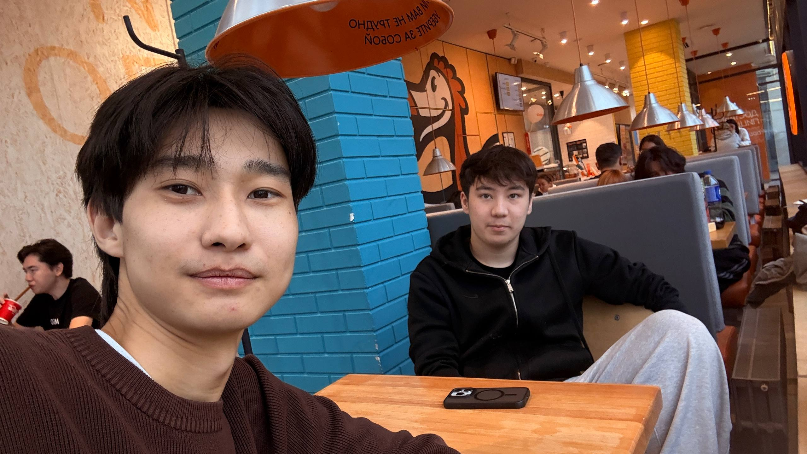
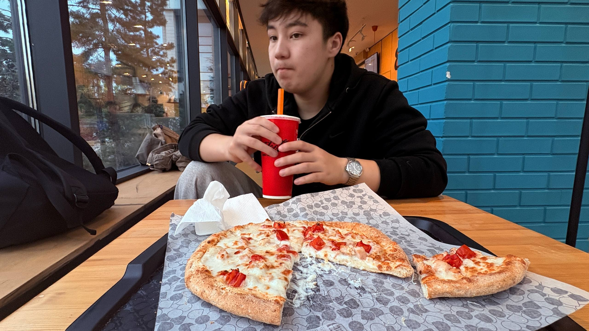
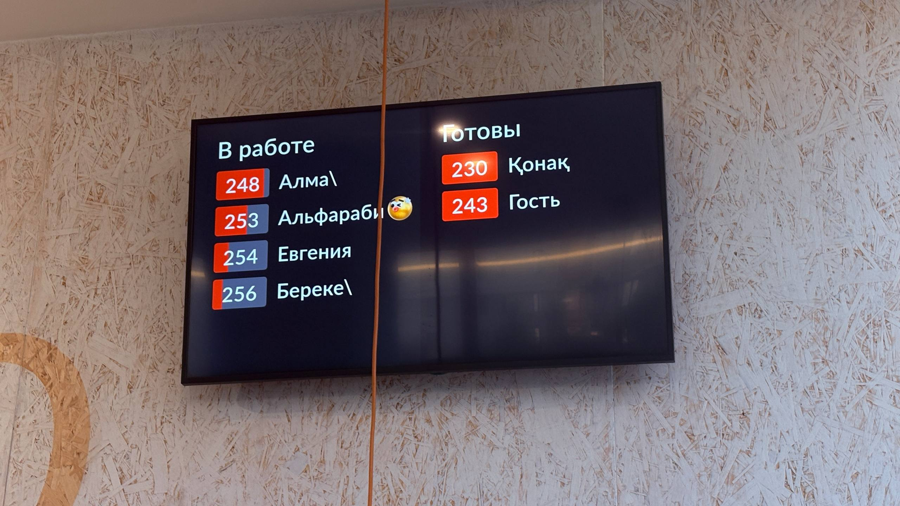

Design
The Dodo Pizza box features the brand logo and a recognizable red-and-white color scheme. It has a practical design and reflects the company's visual identity.
The pizzeria looks bright, cozy, and modern. There is plenty of space, the tables are arranged conveniently, and soft lighting creates a warm and friendly atmosphere. It is a pleasant place to spend time with friends or family while feeling relaxed and comfortable.

The Dodo Pizza box features the brand logo and a recognizable red-and-white color scheme. It has a practical design and reflects the company's visual identity.


